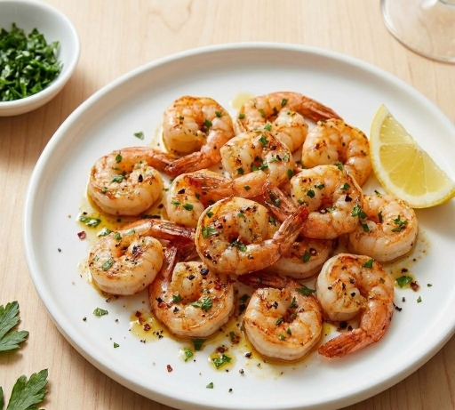

Homepage
Roasted Shrimp

Description
This roasted shrimp recipe is a simple and fast way to cook shrimp. Can be served as a side, appetizer or as a main, fitting for many ocasions.
Ingredients
- 1 pound fresh shrimp, peeled and deveined.
- 3 tablespoons olive oil.
- 3 tablespoons olive oil.
- 1 tablespoon dried parsley.
- 1 teaspoon ground black pepper.
- 1/4 cup butter, cubed.
Step by step
- Gather all ingredients. Preheat the oven to 450°F (230°C).
- Arrange shrimp in a single layer in a stoneware baking dish. Drizzle with olive oil.
- Combine garlic salt, parsley, and pepper in a small bowl; sprinkle over shrimp.
- Scatter butter on top of shrimp. Roast in the preheated oven, watching carefully, until shrimp is bright pink on the outside and the meat is opaque, 5 to 10 minutes.
- Serve.